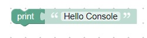
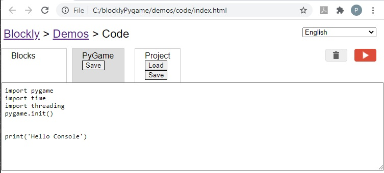
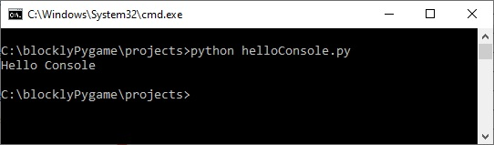

Print Text to command prompt window (console)
New Concepts
- You can open a command prompt window in any directory
- We will use the directory: C:\blocklyPygame\projects
- Python can be run from a command prompt (windows-r, cmd)
- Python can write to the command prompt window
Code
This code will display "Hello World" in the console and then quit

This is the python code that is generated

Press on the PyGame Save button to download the python code to your computer
The name of the saved .py file should be hello.py
To run the .py file type:
python hello.py
In the command prompt window
Here is what the console looks like
